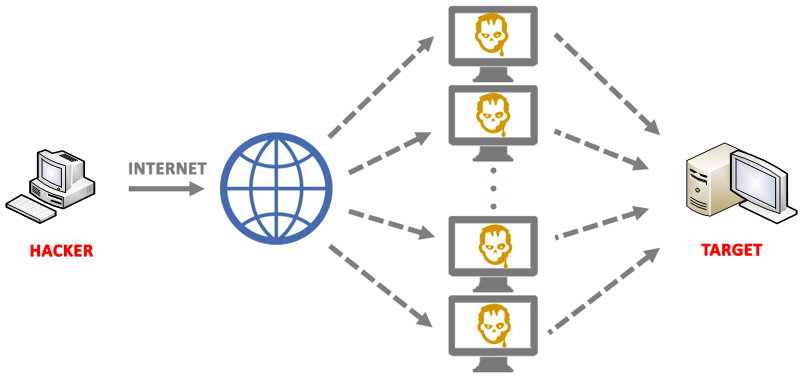
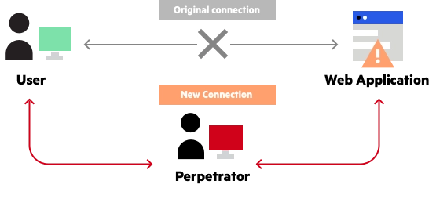
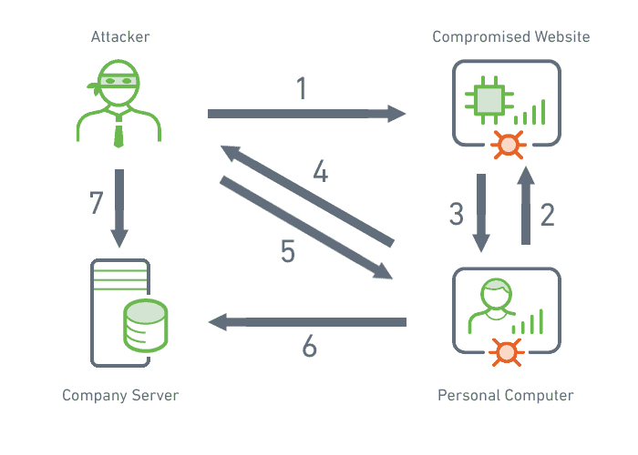
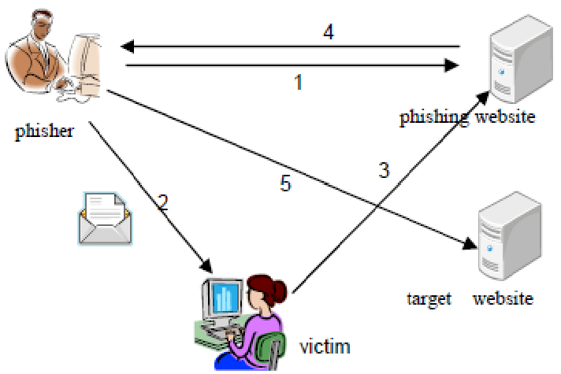
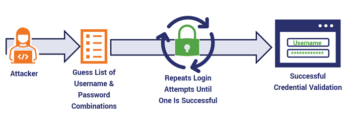
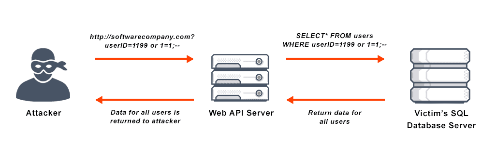
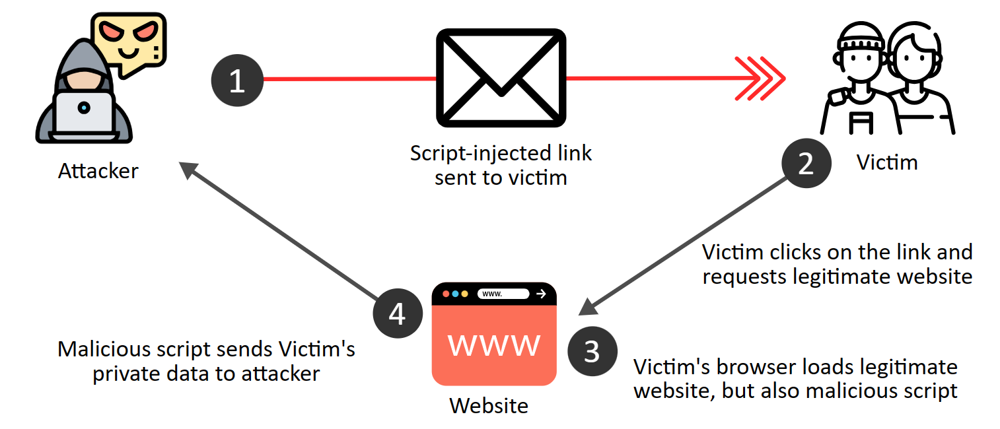
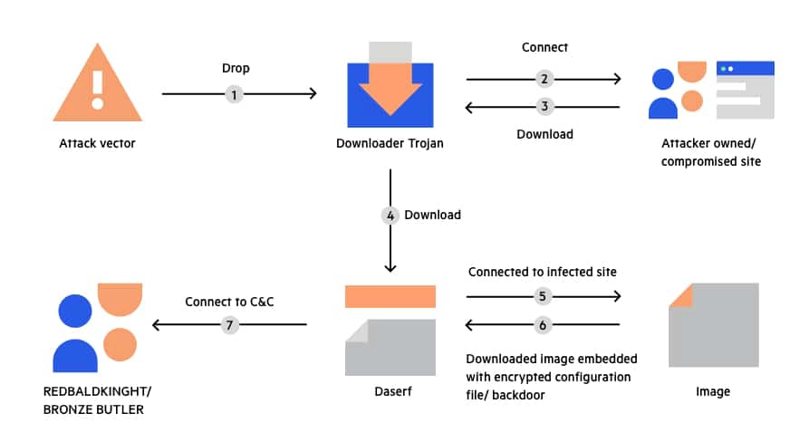
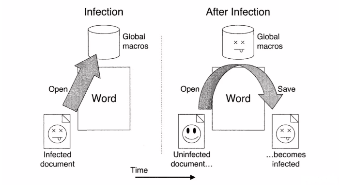
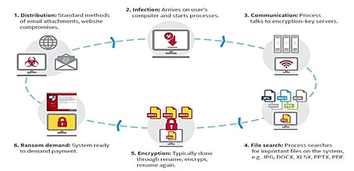

| Activity | Date |
|---|---|
| First day to enrol for re-enrolling (continuing students) | 21 Nov 2022 |
| Orientation | 18 Jul 2023 |
| Lectures Commence (weeks 1-9) | 24 Jul - 22 Sep 2023 |
| Last day to enrol / add subjects yourself | 04 Aug 2023 |
| Last day to enrol / add subjects with Head of Students approval | 11 Aug 2023 |
CENSUS DATE
Learn more about Census date > |
31 Aug 2023 |
| Student Services and Amenities Fees Due | 01 Sep 2023 |
| Name | Web Attacks |
|---|---|
|
Denial of Service (DoS)  Image Source: https://www.researchgate.net |
The objective of a Denial of Service (DoS) attack is to crash the server, rendering it inoperable. This is acheived by flooding the server with large amounts of requests. Due to the high traffic of packets being directed at the server, the server is unable to respond and essentially shuts down. The attack can occur from a single computer, or from a botnet (this particular type of attack is called a Distributed Denial of Service attack, or DDoS). References: |
|
Man-in-the-Middle Attack  Image Source: https://www.imperva.com |
A Man-in-the-Middle attack requires the perpetrator to insert themselves in between the user and the server. This means that instead of the user sending a request directly to the server, the request is first intercepted by the perpetrator. The perpetrator acts as a proxy server and is able to manipulate the information before it gets sent to the server. The perpetrator can also modify information sent from the server to the user. References: |
|
Drive-by Download Attack  Image Source: https://www.exabeam.com |
When visiting a website, the user may unintentionally download a malicious script; this is called a Drive-By Download. This may occur without the user's knowledge if they have an out of date browser or plugins. Alternatively, the user themselves may download a program without realising it has a malicious script in it. References: |
|
Phishing  Image Source: https://www.researchgate.net |
Phishing is a method in which attackers try to extract sensitive information from users through social engineering. This information may include personal details, home address, bank details, login information, and so on. The perpetrator will pose as a legitimate entity in order to lead the user to reveal sensitive information about themselves. Spear phishing is focussed on getting sensitive information from a specific target. References: |
|
Password-based Attack  Image Source: https://www.thesslstore.com |
An attacker might want access to a user's account, but does not know the user's password. The perpetrator would then use a Password-based attck to get access into the user's account. An attacker might use brute-force or a password dictionary to guess the password of the user until they gain access. Alternatively, the attacker might try using already comprimised credentials. References: |
|
SQL Injection  Image Source: https://www-stage.avinetworks.com |
SQL Injection is when a perpetrator uses a specific string of characters to run the perpetrator's desired SQL command on the server end. The perpetrator enters the specific string into an input text area on the website. If there's a vulnerability in the code on the server's end, then the string can be read as a SQL query, which can then lead to the perpertrator potentially retrieving all the contents from the server's database. References: |
|
Cross-Site Scripting  Image Source: https://websitesecuritystore.com |
If a website or web application has vulnerabilities in its code, then an attacker can use Cross-Site Scripting to use that web application to send malicious script when accessed. Through social engineering, a user may unsuspectingly trigger the malicious script when they access the seemingly innocent website. This attack can be used to get sensistive information from the user, download malware onto the user's computer, or redirect the user to a malicious website which the perpetrator controls. References: |
Trojans  Image Source: https://www.imperva.com |
When Trojan malware is downloaded onto a computer, it creates an unauthorised access point to the computer. The attacker can use this access point to steal information from the user's computer, download more malware onto their computer, or take control of the user's computer. Social engineering is used to manipulate a user to download a trojan malware. References: |
|
Macro Viruses  Image Source: https://www.slideshare.net/lastlinesecurity |
A perpetrator can infect a software application by scripting malicious code using the application's macro language, hence the name Macro virus. For example, the perpetrator may insert a malicious script into a Microsoft Word or Excel document using macros. If the user downloads an infected document and triggers the attacker's macros, the macros can then infect other documents, causing (at worst) data corruption or hard-drive reformatting. References: |
|
Ransomware  Image Source: https://www.researchgate.net |
Ransomware is a type of malware which renders the user's data inaccessible on their computer. If a user unintentionally downloads ransomware, the attacker can then encrypt the user's data. The goal isn't to steal the user's data; the aim is to extort the user, i.e. hold the computer up for ransom. The only way to gain access back to the data is by meeting the perpetrator's demands and obtaining the decryption key from them. References: |